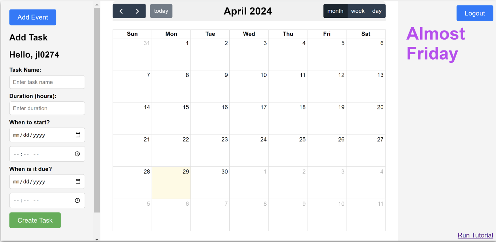

TimeManager
This website was deployed on render but no longer is deployed. It was built in the Spring of 2024 with three other peers using JQuery, Flask, and PostgreSQL. The project was inspired by the desire to have an automatic time manager. As a Princeton student, at any point in time there are always countless lectures, meetings, exams, and assignments to attend to and managing the allocation of time per assignment can be a struggle. Thats why I spearheaded TimeManager designed for Princeton students. Students had the ability log in and enter all of the recurring classes, meetings, practices, etc. Then, the student could enter a task they needed to complete, how many hours they expected it to take, and when it was due. The program would then split the time needed to complete the assignment into hour long chunks and spread them out in the available time slots adding up to the total time needed before the due date. The program could then do the same for any other assignment and color code the time chunks by assignment. We also provided the user the ability to change the size of time chunks allocated in settings in case they preferred to work in shorter bursts or longer periods. The website also had encouraging and funny motivational sayings rotating through on the right to keep the user engaged and lighten the mood.
